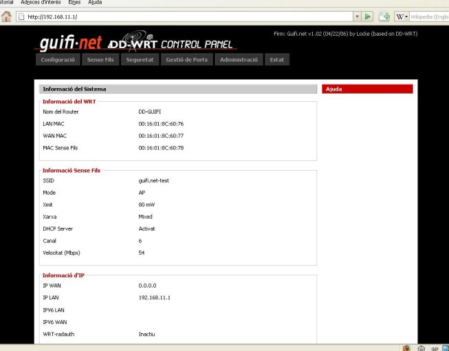
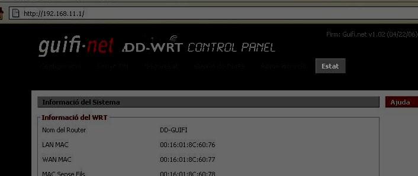
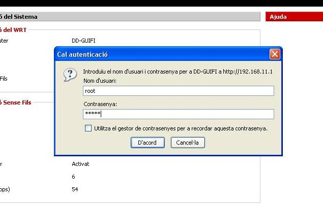
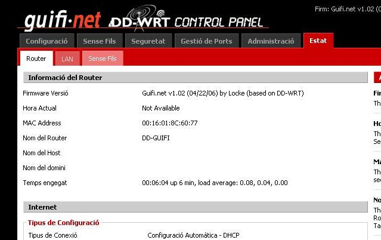
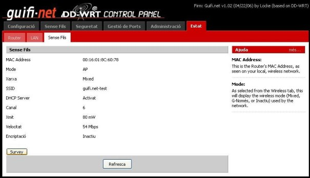
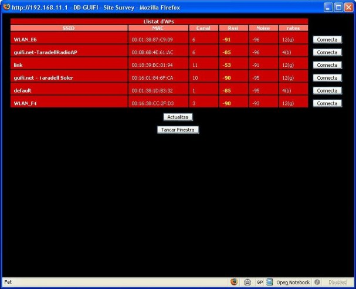
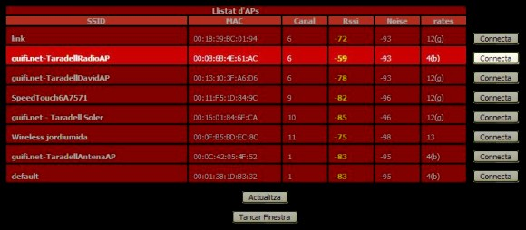
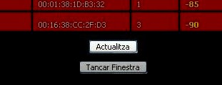

Si ara obrim el navegador web i escrivim 192.168.11.1 ens apareixerà una pàgina
diferent a la que havíem vist anteriorment.
Aquesta és la pàgina principal del nou firmware (el DD-guifi).

Ara hem d'anar a l'apartat que s'anomena ESTAT que trobareu a la part
superior dreta.

Un cop clicat, us demanarà autentificar-vos per accedir al router. Haurem
d'escriure el nom d'usuari root i la contrasenya admin.

Si hem realitzat correctament la validació de l'usuari, ens apareixerà la
pantalla d'Estat del router, on trobarem 3 noves pestanyes: ROUTER, LAN i SENSE
FILS.

Ara hem de clicar a la pestanya que diu SENSE FILS

Trobarem un botó a la part inferior esquerra anomenat SURVEY, que ens
servirà per buscar els punts d'accés inal·làmbrics propers al nostre router.
Cliquem al botó SURVEY i ens apareixerà la següent pantalla a on se'ns presenta
diversa informació en una espècie de graella anomenada Llistat d'AP's.

Dins d'aquesta nova finestra, hem de buscar un punt d'accés que comensi per
"guifi.net-ELNOMQUESIGUIDEPENENTDELAVOSTRAUBICACIÓ" i que els paràmetres de RSSI
i NOISE siguin els recomanats. Entenem per valors recomanats els valors
compresos entre el VALOR ACONSELLABLE I EL VALOR MÍNIM ACONSELLABLE de la taula
següent:
CAMP
|
VALOR ACONSELLABLE
|
VALOR MÍNIM ACONSELLABLE
|
RSSI
|
~ -75
|
> -85
|
NOISE
|
-100
|
< -95
|
ATENCIÓ: cal tenir en compte que els valors negatius del RSSI poden
portar a la confusió, ja que al ser en escala negativa, un -75 seria més gran (i
millor) que un -85. Igual passa amb el NOISE, que ha de ser com més proper a
-100 millor.
En el nostre cas, el punt d'accés seleccionat (AP) es
"guifi.net-TaradellRadioAP" perquè obtenim uns valors de RSSI de -59 i NOISE de
-93.

En cas que obtenim uns valors molt dolents (RSSI ~ -90 i/o NOISE ~ -80) o no
trobar cap AP de guifi.net, haurem de re-orientar l'antena i clicar on hi ha el
botó de ACTUALITZAR.

Un cop ja sabem a on connectar, anem a la web de Guifi.net a donar d'alta el
nostre node per tal de situar el nostre node i realitzar la configuració del
router.